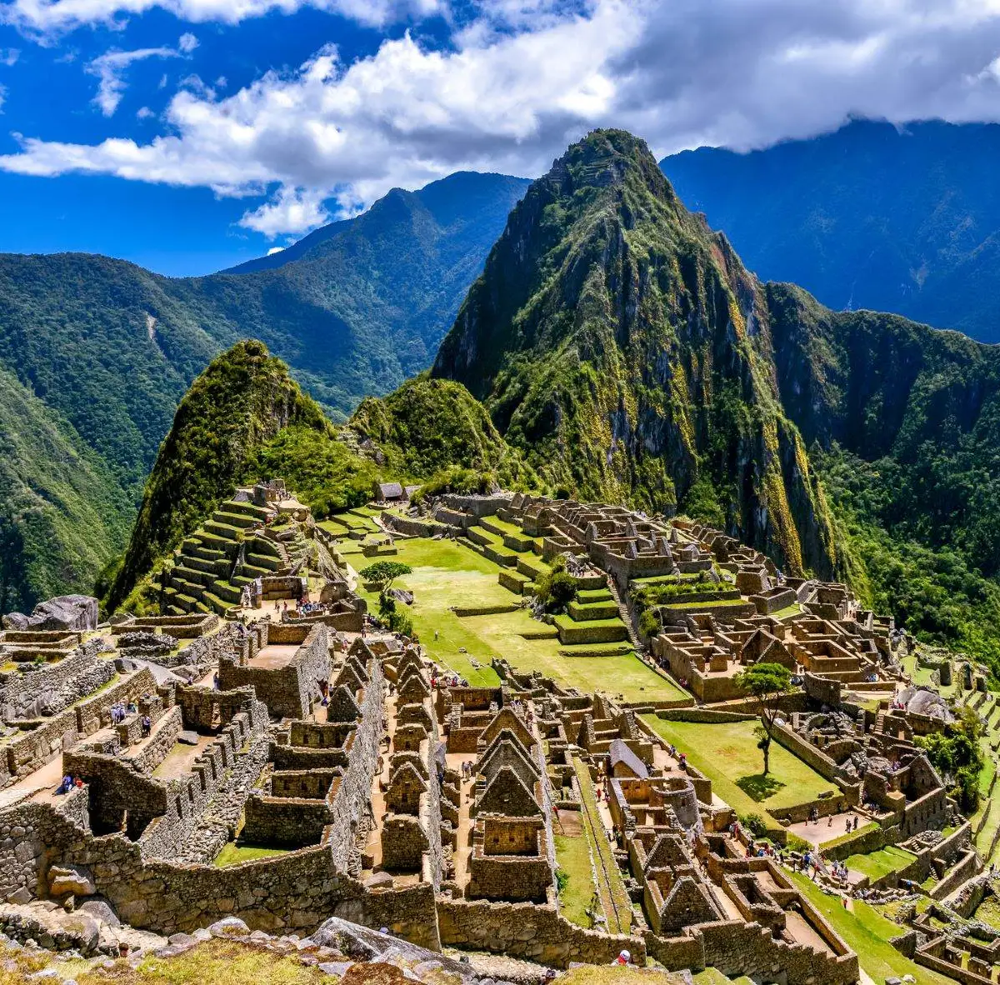

Principales Destinos
Descubre los lugares imperdibles que hacen de Perú uno de los destinos más buscados de Sudamérica:
- Machu Picchu: La ciudadela inca perdida, una de las Siete Maravillas del Mundo Moderno.
- Cusco: La antigua capital del Imperio Inca, llena de historia y arquitectura colonial.
- Lago Titicaca: El lago navegable más alto del mundo, hogar de las islas flotantes de Uros.
- Lima: La capital gastronómica de Sudamérica, con una rica historia y vida nocturna animada.
- Arequipa: La "Ciudad Blanca", famosa por su arquitectura de sillar y el majestuoso Cañón del Colca.
- Líneas de Nazca: Enigmáticos geoglifos dibujados en el desierto, visibles solo desde arriba.
- Valle Sagrado de los Incas: Un valle fértil entre Cusco y Machu Picchu, con sitios arqueológicos y pueblos tradicionales.
Galería de Imágenes
Inspírate con algunas de las bellezas de Perú:
